Fox sculpture
One mesh. Three layers.
Neutral shape / base color / base + normal
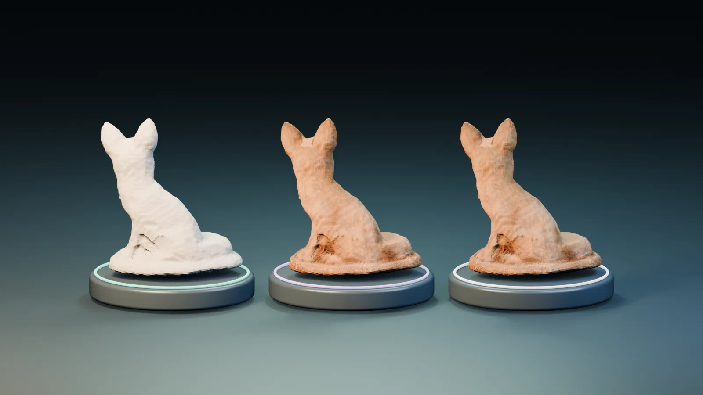
Inspect every view.
Choose a photo. Slide across its matched render.
Turn the model ↗Camera 01
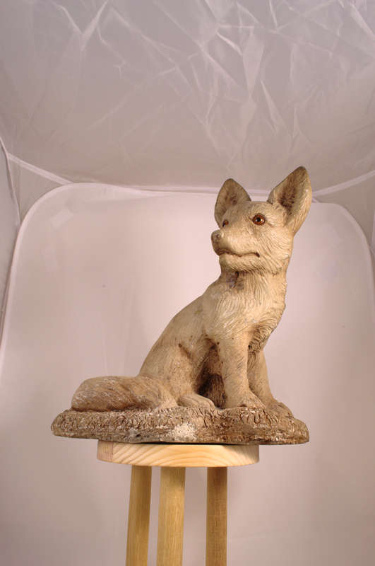
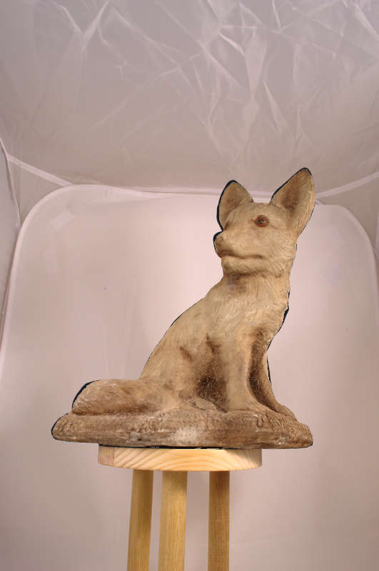
MATERIAL RENDERSOURCE PHOTOThe display composite uses this photograph's own mask. It does not enter either metric calculation.
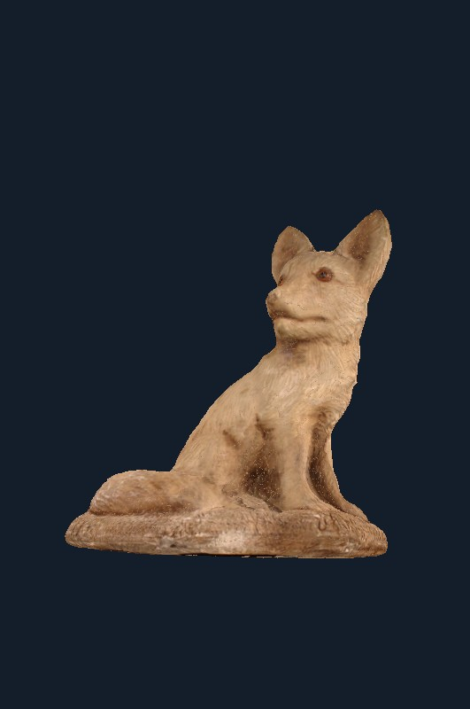
Where the pixels disagree
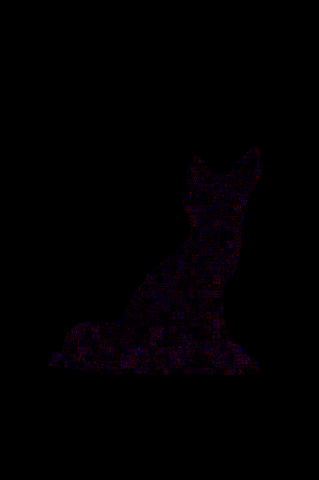
Red: candidate increased error. Blue: candidate decreased error. Black: outside the owner-mask interior.
Read the metric contract and its limits
The local report compares full-resolution 531 × 800 saved camera renders inside the owner-and-mesh region. The Nebius audit resampled the photo/render pairs to 360 × 542 JPEG and eroded each source owner's mask by three pixels, without the exact mesh-hit intersection. Those contracts differ; a small change of sign is a diagnostic sensitivity, not a material acceptance result. The original source masks remain bound to their own photos.
Texture studies
Source zones, repeat methods, and material previews from two licensed photographs.
Peeling paint
Paul Stevenson · CC BY 2.0
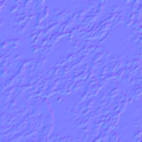
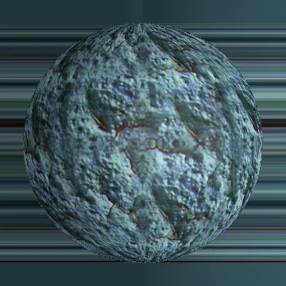
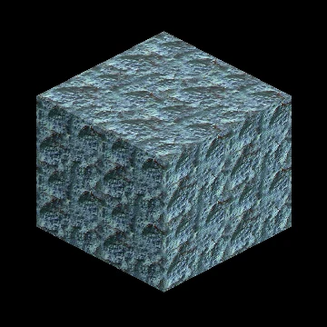
Weathered wood
sagesolar · CC BY 2.0
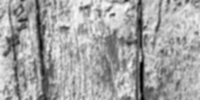
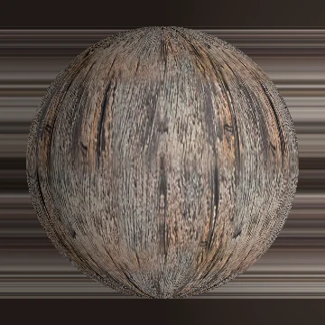
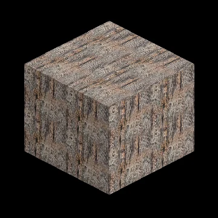
Illustrative display lighting and assumed roughness. Paint uses the inferred normal prior; the wood height prior is shown separately and is not applied as measured displacement. Physical PBR remains unqualified.
Reports
Qualification, measured Nebius usage, and the source record.
12-view CUDA pixel audit
aijob-e00he632g06bw1kxtvSource photographs, their own masks, and both saved camera renders were packaged by view. The outputs were downloaded and SHA-256 checked.
Read the cloud evidence report →Nemotron 3 Super
One bounded diagnostic review of deterministic facts. It selected improve material validation and left asset approval with the saved gates.
779 input · 911 output
Cost estimates
The provider's billed amounts are still pending in Billing. These are list-price calculations, not invoice totals.